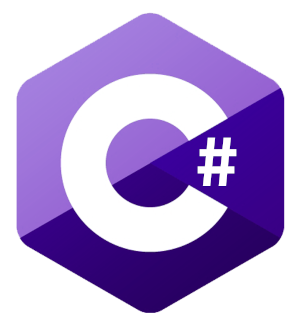
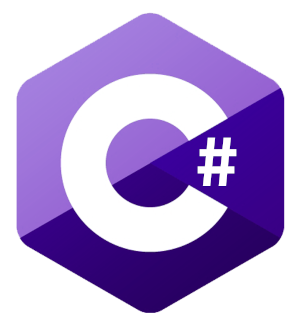

Théo ROBARD
Développeur Web Junior
Langues
ANGLAIS: Professionnel niveau B2 (TOEIC: 850)
ESPAGNOL: Notions
Expérience Professionnelle
Mire SAS : Ingénieur R&D en alternance.
déc 2017, sept 2020 (3ans) | 22-24 Rue Lavoisier Bâtiment C, 92 000 Nanterre
Conception, réalisation et mise en place d'un système d'auscultation automatique d'ouvrage du BTP sur Raspberry pi avec contrôle de station totale, base de données et site web de paramétrage du système pour les futurs utilisateurs. Langages utilisés: Python, PHP, HTML, CSS, Javascript, SQL.
Nespresso : Stage, Service Informatique.
avr, juin 2016 (2 mois) | 1 Boulevard Pasteur, 75015 Paris
Support informatique pour les utilisateurs, préparation de PC et smartphone, écriture de procédures, organisation et animation de réunions en interne.
Formations
ENI Ecole: Formation développeur .NET.
Juin - Septembre 2021 (4 mois) | Formation en ligne
Développement web BackEnd avec ASP.NET.
Développement web FrontEnd avec HTML, CSS et JavaScript.
Développement cross platform avec Xamarin.
Gestion de base de donées avec SQL Server.
Ecole Nationale Supérieur de l'Electronique et de ses Applications (ENSEA) en alternance, mention très bien au projet industrielle.
2016-2020 (4 ans) | 6 Avenue du Ponceau, 95000 Cergy
Option électronique et informatique industrielle: Systèmes embarqués, microprocesseur, Linux, web, FPGA, Base de données, électronique analogique et numérique.
DUT Génie Electrique et Informatique Industrielle
2014-2016 (2 ans) | 5 Mail Gay Lussac, 95000 Neuville-sur-Oise
Informatique industrielle, électronique, programmation en C et Assembleur.
Projets: Orgue a ultrason entièrement analogique et réalisation d'un jeu de ping pong en language C.
BAC STI2D option Système d'Information et Numérique, mention bien
2011-2014 (3 ans) | 1 Rue des Alouettes, 78420 Carrières-S-Seine
Projet BAC: Conception et réalisation d'un radar de recul pour fauteuil roulant sur carte Arduino.
Languages informatiques


 


Compétences
Informatique: : Gestion de base de données (SQL), analyse et conception d'une applications, linux, algorithmie, programmation orientée objet et réseau.
Electronique: Réalisation de circuits logiques combinatoires et séquentielles, liaison série, machine à état, montages amplificateurs, filtrage, modulation AM,FM.
Logiciels: Excel, Eclipse, Keil uVision, Quartus, Visual Studio, SQL Server Management.
Communication:Prise de parole en public, soutenances, exposés débats et réunions.
Centres d'intéret
Nouvelles technologies, tennis (pratiqué en club), musique, jeux vidéo, nature et voyages (Grèce, Espagne, Norvège, Singapour, Indonésie...).